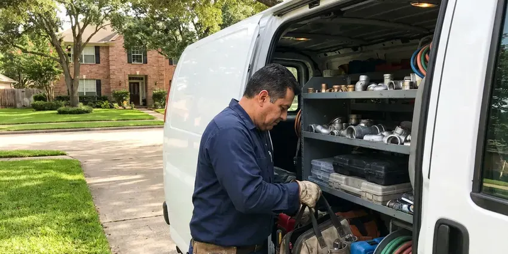

Basement Leak Repair in Lynn, MA
Water on your basement floor in Lynn, MA? BWM Plumbing finds whether it is a pipe, a drain or the ground, then repairs the right one.
- Pipe & Drain Repairs
- Licensed and Insured
- Moisture Meter & Camera Testing
- Quick Leak Detection

Get Reliable Basement Leak Repair in Lynn, MA.
Testing comes first, so you only pay for the repair that fixes it.
Licensed Basement Leak Repair in Lynn, MA
BWM Plumbing repairs basement leaks caused by failed supply lines, cracked drain pipes and floor drain backups. We also service sump pumps and the drain tile that feeds them. Most homeowners call us after spotting a wet carpet edge or a white mineral line on the wall, and by then the water has usually been coming in for weeks, so we check behind the finish for hidden damage. Mold starts fast.
Our expertise includes:
- Foundation crack injection repair
- Repair of cast iron, ABS, PVC and copper lines in basements
- Floor drain and backwater valve service

Additional Plumbing Maintenance Services in Lynn, MA
Our maintenance and specialty plumbing services in Lynn, MA protect your home year-round and extend the life of every system.


Customers
Why Choose BWM Plumbing for Basement Leak Repair in Lynn, MA?
Foundation type changes the repair. Injection suits poured concrete, and block walls usually need drainage instead. Slab-on-grade lower levels, walkouts and older stone foundations each have their own weak spots, and we match the fix to what is actually there instead of selling one system for every house. Local code applies too.
- Code Compliant, Work follows the plumbing and building codes used in Lynn and Massachusetts, and permits are pulled when needed.
- Lasting Repairs, Repairs are matched to Massachusetts' climate so water stays out year after year.
- Diagnosis First, We confirm the water source with meter and dye tests before any repair.
Citywide Coverage
Commercial lower levels around Lynn, such as shop storage rooms and office archives, get the same testing. Early or late visits are available. Roof drain leaders and grease lines often leak unnoticed for months, so we check them too.
Experienced Team
The people at BWM Plumbing who fix basement leaks are plumbers first. That matters when the source is a slab leak under the basement floor. We isolate and pressure test the line, then find the leak acoustically so we only open one small spot.
Safety-First Approach
Standing water near an outlet or a furnace can be a shock hazard. We check for live circuits before stepping in. Power gets shut off at the main if water reaches outlets or the panel, and gas appliances that got wet are checked before restarting.
Trusted Certified Lynn Plumbing Services Professionals
At BWM Plumbing, we are proud to offer certified plumbing services throughout Lynn, MA. Those papers on the wall mean something. Our plumbers hold recognized industry credentials, and they follow strict safety and quality rules on every repair, installation and maintenance call we run.
Call Us Now PHCC Plumbing Contractor Recognition
PHCC Plumbing Contractor Recognition Better Business Bureau (BBB) Accreditation
Better Business Bureau (BBB) Accreditation Angi Certified Pro
Angi Certified Pro ISO 9001 Quality Management Certification
ISO 9001 Quality Management CertificationBasement Leak Repair Work in Lynn, MA
Sump Pump Repair and Installation in Lynn, MA
Plenty of basements rely on a sump pit to handle runoff and groundwater. Nor'easters and heavy spring rain can raise groundwater quickly in Massachusetts, sending water into basements that stay dry most of the year. Pumps from big-box stores often last five to seven years, and the first sign of trouble is usually a pump that runs constantly or hums without moving water. Same-day replacement is normal.

New Sump Pump Installation in Lynn
Installing a new sump means breaking out a section of slab, setting a lined pit, and running the discharge out through the rim joist. Most of our installs get a cast iron pump, a check valve and 1-1/2 inch discharge. Discharge cannot go into the sewer in most places. It has to discharge outside, far enough from the foundation that it does not cycle back into the pit, often ten feet or more.
Emergency Basement Leak Repair in Lynn, MA
A pipe that lets go in a basement can put an inch of water on the floor in under an hour. First, close the main water shutoff. Then call us, and a plumber will come out to stop the leak, repair the pipe, and get water back on so you can start drying the space. We can also refer a water mitigation company.
Hydrostatic Pressure Relief in Lynn
High groundwater pushes up through the slab as well as in through the walls. Water rising through floor cracks or around a floor drain during wet weather is the usual sign. Under-slab drain pipe tied to a sump lowers the water level beneath the floor. It is not a quick job.
Urgent Basement Leak Service in Lynn, MA
Basement leaks rarely wait for business hours. Tanks tend to split at night when nobody is watching. The on-call truck carries couplings, valves and a wet vac, so the first visit usually stops the leak and restores water to the rest of the house.
Water Heater and Appliance Leak Repair in Lynn, MA
Water heaters, softeners and washing machines often sit in basements, and their leaks pool on the floor out of sight. Once the tank itself leaks, it needs replacing. Valve and connector leaks are usually a same-visit fix, and an automatic shutoff sensor is worth adding.
Wall Leak Solutions in Lynn, MA
Damp walls without a crack usually mean water moving through porous concrete or block. A simple foil test tells you whether it is seepage or condensation: tape a square of foil to the wall for a day and see which side gets wet. Condensation needs a dehumidifier. Real seepage calls for better drainage or an interior channel.

Wall and Slab Seepage Repair in Lynn
Seepage at the wall or the slab joint is usually surface water pooling against the foundation. Tree roots and shifting fill around old clay or cast iron sewer laterals are a common cause of backups in established neighborhoods. We look at gutters and grading first, since fixing them outside often stops the seepage for far less money. We always try the cheap fixes first.
Basement Leak Repair Near Me in Lynn, MA
Local knowledge includes how the soil and storms around Lynn affect lower levels. Tree roots and shifting fill around old clay or cast iron sewer laterals are a common cause of backups in established neighborhoods. That tells us whether a wet wall is likely a drainage issue or a plumbing one before we even unpack the meter, and where to look first along the foundation. Then we confirm it.
A plumber near your Lynn, MA home can come back quickly for a follow-up check after the next heavy rain. That follow-up matters. Seepage repairs are only proven when the ground is saturated, so we ask you to call us after the first big rain and we will come back to check the wall with a meter.
BWM Plumbing at a Glance
- Fully licensed plumbing team covering Lynn, MA
- Same-day appointments and 24/7 emergency response
- Upfront, flat-rate pricing before work begins
- 4.9-star rated by 434+ Massachusetts customers
Lynn Map
Lynn Information
- Population
- 101,241
- Area codes
- 781/339/978
- Service area
- Lynn and towns within a 40 mile drive
- Nearby
- Revere, Peabody, Malden, Everett
Basement leak repair in Lynn, MA often starts at a foundation crack. Tree roots and shifting fill around old clay or cast iron sewer laterals are a frequent cause of backups in established neighborhoods. We fix the crack and the water pushing on it.
Expert Services
Call BWM Plumbing for reliable plumbing work done by licensed pros in Lynn, MA.
Our Specialized Plumbing Services in Lynn, MA
At BWM Plumbing, you get every kind of plumbing service from one company across Lynn, MA. From leak detection to full system installs, our team works fast and charges fair prices on homes and commercial properties alike. Here are the core services we offer:


How Our Basement Leak Repair Process Works in Lynn, MA
Every basement leak job starts with testing, so you pay for the fix that works.
Call Us
Call (857) 335-4894 to book an inspection. Tell us where the water shows and when.
Thorough Inspection
A technician checks the area with a meter and thermal camera. We confirm the source before quoting.
Written Plan
You get an itemized written estimate for the repair. Nothing starts until you approve.
Frequently Asked Questions About Basement Leak Repair in Lynn
Price depends on the source. A supply line or fitting repair usually runs a few hundred dollars. Crack injection, sump replacement and interior drain systems step up from there, with full perimeter drains or exterior waterproofing reaching several thousand dollars because of the concrete work and digging. We quote after testing.
Leak repair stops a specific source, like a cracked pipe or a leaking wall crack. Waterproofing covers the whole wall. It handles groundwater all around the foundation and makes sense when water comes in at many points.
Heavy storms dump a lot of water quickly, and the soil around the foundation cannot absorb it fast enough. Nor'easters and heavy spring rain can raise groundwater quickly in Massachusetts, sending water into basements that stay dry most of the year. Saturated soil pushes water against the walls and up under the slab through the cove joint, so the leak shows only when the ground is soaked. It disappears when the ground dries.
Some small leaks are fine to handle yourself, like tightening a washer hose or replacing a leaking supply connector. Tree roots and shifting fill around old clay or cast iron sewer laterals are a common cause of backups in established neighborhoods. Patches on cracks caused by ground movement tend to fail, since the water pushes from outside. A hydraulic cement patch is temporary.
Most supply and drain repairs are finished in a few hours. Sump installs take most of a day. Drain stack replacements and slab leak repairs usually take one to two days, since they involve opening finished surfaces, letting any new concrete patch cure, and running a final test before we close things up.
Look for damp spots on walls or floors, a musty smell, and white chalky deposits on concrete. That white crust is mineral left after water dries. Peeling paint low on the wall, rust on the water heater base, and a water bill that keeps creeping up with no change in use all point toward a leak worth testing. Smell often comes first.
Zoeller, Liberty and Wayne cover most of our installs because they are durable and parts are easy to get. We pick cast iron models for primary pumps. For homes that lose power in storms, we add a battery backup pump or a water-powered backup where city water pressure is strong enough, and we put a high-water alarm on the pit either way.
A pipe or fitting repair usually takes an hour or two. Injecting a crack is a half-day job. Sump pit installation takes most of a day, and an interior perimeter drain system takes two to five days depending on wall length and how much finished space has to be cleared first.
Hear From Customers Who Hired Our Plumbing Experts

Patricia H.
We had a slab leak that two other companies could not find. BWM Plumbing located it in under an hour with a listening device. They rerouted the line through the attic instead of breaking up the floor, so we kept our kitchen tile.
Slab Leak Repair · Peabody, MA
Nathan E.
Our tankless heater kept throwing an error code and shutting off mid shower. The tech flushed the heat exchanger, which was full of scale, and replaced a bad flow sensor. Hot water has been steady for half a year now.
Water Heater Repair · Medford, MA
Greg S.
I manage a small strip center with six tenants. BWM Plumbing handles our annual backflow testing and fixed a recurring clog in the shared sewer line that had been backing into the nail salon. Their reports come in clean and on time.
Commercial Plumbing · Malden, MA
Kevin O.
Before buying our house I paid for a sewer camera inspection. BWM Plumbing found a belly in the line that held standing water about forty feet from the cleanout. We used the video to get the sellers to fix it before closing.
Sewer Camera Inspection · Malden, MAMark T.
The floor drain in our office break room backed up every few weeks. The plumber ran a cable, then put a camera down and found roots at a joint about thirty feet out. Seeing it on the screen made the decision easy.
Drain Cleaning · Peabody, MA
Laura S.
Our 40 gallon tank started leaking from the bottom after thirteen years. The tech hauled the old one out, set a new unit with a fresh expansion tank, and had hot water running in about four hours. He took the old tank with him too.
Water Heater Replacement · Malden, MA